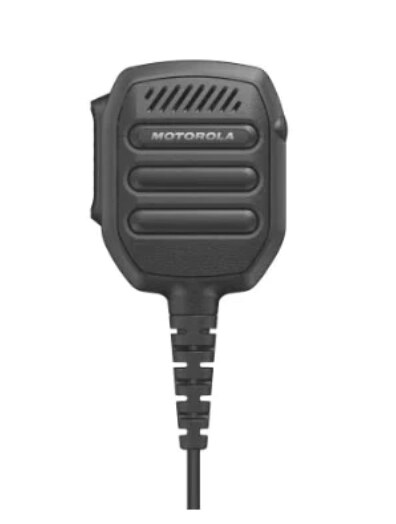

Home / Field ops / Motorola speaker microphone
Field ops · Accessory
$179 ships from us after payment
Sold by Dark Sky Systems LLC. Card via Stripe.
A Motorola speaker microphone for the locked two-way. Radio stays on the belt during an airspace receiver.
| Model | PMMN4148 (RM110) |
|---|---|
| Fit | Motorola MOTOTRBO R2 series — the locked radio in our two-way kit |
| IP rating | IP55 |
| Jack | 3.5 mm (receive-only earpiece) |
| Size class | Small form (about 59 × 76 × 22 mm) |
The locked Motorola MOTOTRBO R2 two-way radio we sell as the $1,199 kit. Same 2-pin accessory connector. It is not a universal mic for every handheld.
No. The earpiece ships with the radio kit. This speaker microphone is a second accessory — vest-clip speaker and PTT. You can run one or the other on the accessory jack.
Yes. It only fits that Motorola radio. If you do not have the locked radio, buy the kit first or with this accessory.
No. It is a speaker microphone for field comms. It does not jam, spoof, or transmit as C-UAS.
Pay on Stripe. We order from a US shop to the address on the receipt after payment. Tracking by email. Prefer to fulfill it on the same order as the radio.